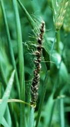
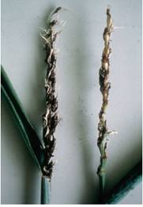
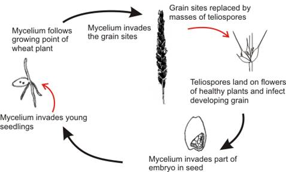

WHEAT :: MAJOR DISEASES ::LOOSE SMUT
Loose smut - Ustilago nuda tritici (Ustilago tritici)
Symptoms
It is very difficult to detect infected plants in the field until heading. At this time, infected heads emerge earlier than normal heads. The entire inflorescence is commonly affected and appears as a mass of olive-black spores, initially covered by a thin gray membrane. Once the membrane ruptures, the head appears powdery.
{kind=link}
|  |  |
Symptoms |
|
Spores are dislodged, leaving only the rachis intact. In some cases remnants of glumes and awns may be present on the exposed rachis. Smutted heads are shorter than healthy heads due to a reduction in the length of the rachis and peduncle. All or a portion of the heads on an infected plant may exhibit these symptoms. While infected heads are shorter, the rest of the plant is slightly taller than healthy plants. Prior to heading affected plants have dark green erect leaves. Chlorotic streaks may also be visible on the leaves.
Disease Cycle
Ears of infected plants emerge early. The spores released from the infected heads land on the later emerging florets and infect the developing seed. Infection during flowering is favored by frequent rain showers, high humidity and temperature. The disease is internally seed borne, where pathogen infects the embryo in the seed.
|  |
Management
Treat the seed with Vitavax @ 2g/kg seed before sowing. Burry the infected ear heads in the soil, so that secondary spread is avoided.